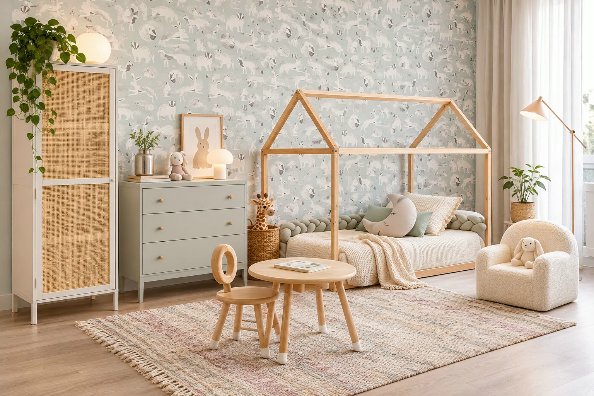
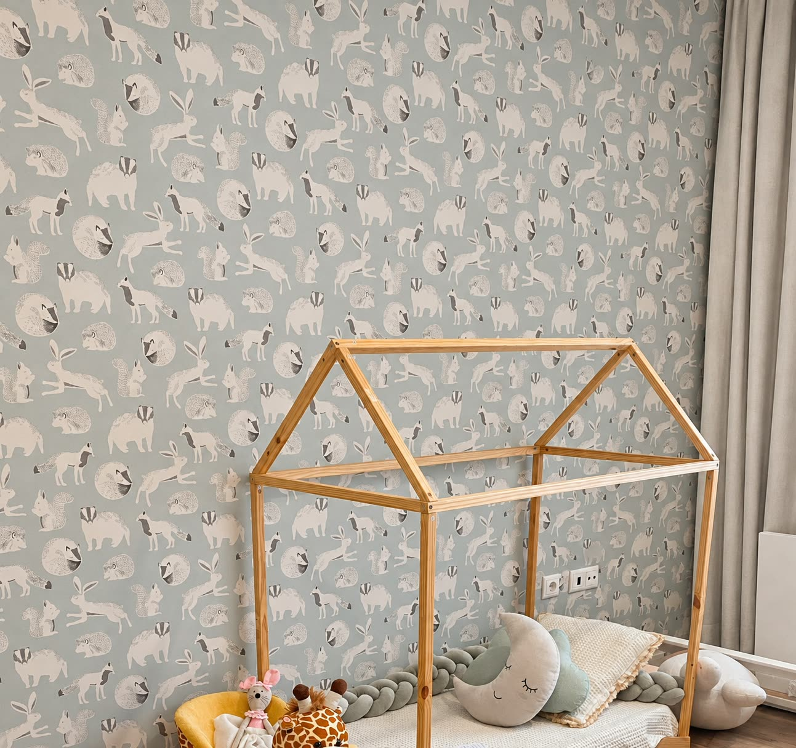
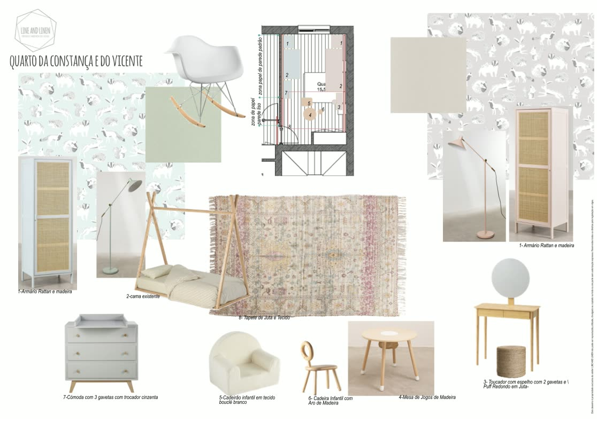

Braga
Quarto da Constança e do Vicente
Um quarto pensado para dois irmãos, a Constança e o Vicente, onde cada um tem o seu próprio cantinho, mas sem perder o sentido de partilha.
Um espaço que combina diferentes cores, texturas e personalidades, criando um ambiente acolhedor, divertido e cheio de pequenos detalhes para crescerem juntos.
Braga

Design de interiores — Line and Linen
Direção de projeto — Alexandra Martins
Braga, Portugal